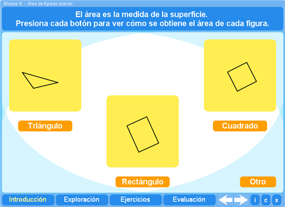
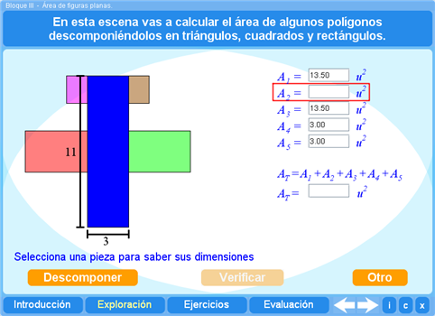
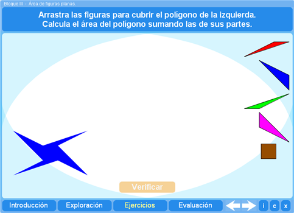
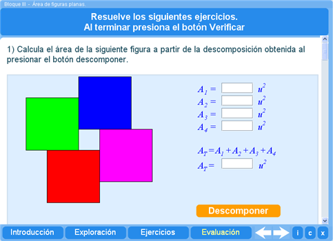
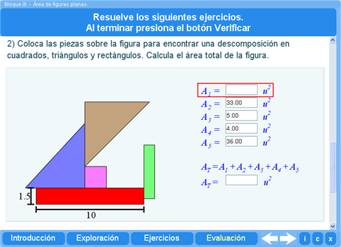

Objetivo
Obtener la superficie de figuras irregulares mediante su descomposición en triángulos, cuadrados y rectángulos.
Instrucciones generales
Se puede navegar entre los apartados con el menú de la parte inferior. Este menú aparece a lo largo de todo el interactivo y conserva su funcionalidad.

También se puede navegar por las escenas por medio de las flechas de navegación que aparecen en el lado inferior derecho del interactivo. Dentro de los apartados Exploración y Ejercicios es necesario utilizar estas flechas para acceder a las escenas sucesivas de dichos apartados.

En la parte inferior derecha del interactivo se encuentran los siguientes botones:
| Muestra la documentación del interactivo. | |
| Despliega los créditos correspondientes a este interactivo. | |
| Cierra el interactivo. |
Contenidos
Introducción
Se presentan las justificaciones de las fórmulas para obtener las áreas de los triángulos, cuadrados y rectángulos.

Exploración
Se presentan diferentes figuras para que el estudiante calcule su área mediante la descomposición en triángulos, cuadrados y rectángulos.

Ejercicio
Se presentan polígonos que el alumno deberá cubrir con triángulos, cuadrados y rectángulos para después calcular el área total del polígono sumando las de las figuras que lo componen.

Evaluación
La primera parte de la evaluación consiste en obtener el área de las figuras que componen a un polígono y sumarlas para obtener su área.

En la segunda parte el alumno deberá cubrir con triángulos, cuadrados y rectángulos el polígono presentado para obtener el área del polígono sumando las de sus componentes.

Las actividades se presentan con datos aleatorios. El estudiante puede repetir la evaluación tantas veces como quiera y el programa llevará control de sus resultados y le irá mostrando la nota media.
| Los materiales aquí presentados utilizan el applet Descartes Web 2.0. | |

|
Los contenidos de esta unidad didáctica están bajo una licencia de Creative Commons. |